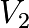
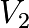

Appendice 1 : Commentaires sur les quatre libertés économiques
La Théorie Relative de la Monnaie (TRM) est fondée sur les quatre libertés économiques dont elle décrit le sens. Par ces commentaires j’ai souhaité en approfondir la compréhension, pour qui souhaite établir son raisonnement économique et monétaire conformément à elles
Remarques générales :
J’ai pu pu noter depuis la première parution de la TRM en 2010 des propos qui disent à peu près « la TRM propose un système monétaire à dividende universel ». Ceci est faux et procède d’une incompréhension de la nature d’un paradigme. Je vais expliquer pourquoi.
La TRM énonce les 4 libertés économiques dans un espace-temps composé d’individus à durée de vie moyenne notée « ev ». Sur cette base, et uniquement par un raisonnement cohérent avec cette base, la TRM aboutit au résultat que les seuls systèmes monétaires compatibles avec ce référentiel sont les systèmes monétaires à dividende universel, et pas n’importe quel dividende, puisque la démonstration aboutit à la valeur relative de ce dividende comme étant ln(ev/2)/(ev/2), la distance d’un système monétaire avec cette valeur centrale démontrée (et non « proposée »), pouvant être qualifiée de distance relative à une monnaie libre.
Il ne s’agit donc absolument pas d’une « proposition », mais d’une démonstration cohérente avec des fondements. Cela est essentiel à comprendre, car un théorème implique la contraposée, qui est sans doute le résultat le plus important de la TRM, qui est que les systèmes monétaires non-conformes avec ce résultat, ne sont pas cohérents avec les 4 libertés économiques dans l’espace-temps humain.
En éclairant cette perspective, la TRM apporte donc une compréhension de la nature des causes qui sont à la racine de la négation des libertés, permettant une compréhension d’une causalité particulière qui aboutit à des nuisances effectives telles que des guerres, révolutions, ou insurrections.
Tant que celui qui étudierait la TRM ne serait pas arrivé à la compréhension effective de ces points de compréhension essentiels concernant la causalité, il ne peut pas s’estimer avoir véritablement compris les résultats et conclusions qui participent de sa nature.
Liberté : La liberté est établie comme tout ce que peut réaliser l’individu conformément à la non-nuisance vis-à-vis des autres individus vivants et futurs. Cette non-nuisance peut-être définie ou comprise en un endroit (x, y, z, t) précis de l’espace-temps et n’en a pas moins des propriétés d’évolution ou de révolution.
Il ne faut donc pas comprendre ici la liberté comme étant définie de façon absolue, ce qui n’aurait pas de sens logique en terme de cohérence. Il ne faut pas non plus comprendre l’excès inverse qui serait que la liberté serait non-définie ce qui est contraire à ce qui vient d’être affirmé.
Enfin les libertés relatives à un système monétaire bien que s’exprimant différemment, ont la même nature fondamentale que les libertés relatives aux logiciels libres. Il faut comprendre par là que c’est l’utilisateur qui doit être libre. On dit donc logiciel ou monnaie « libre » par convention, mais on pourrait dire plus précisément « permettant à leurs utiliseurs d’exercer leurs libertés », donc « libre » relativement aux hommes utilisant l’objet. Il est essentiel de comprendre ce point, car tel qu’écrit on pourrait avoir tendance à penser que c’est une propriété de l’objet en tant que tel au lieu de comprendre qu’il s’agit de ce que l’homme peut en faire, ce qui est très différent.
Liberté 0 : L’individu est libre du choix de son système monétaire.
On peut n’annoncer que les trois libertés économiques suivantes quand on se place déjà au sein d’un système monétaire relativiste, puisqu’on a ainsi déterminé quel système monétaire on a déjà choisi. Aussi il peut arriver qu’un relativiste fasse indifféremment référence aux quatre libertés économiques ou bien seulement aux trois libertés selon les cas. D’où le nombre spécifique 0 accolé à cette première liberté.
Le choix est ici extensible à la possibilité de la modification. Cela signifie donc que non-seulement l’individu peut choisir d’utiliser et d’adopter un système monétaire indépendant, et donc de se référer aux principes édictés par cet autre système monétaire, mais peut aussi agir pour faire évoluer le système monétaire qu’il utilise, conformément aux règles ou aux principes généraux qui permettent cette évolution.
Il s’agit donc d’une double possibilité en terme de modification de l’existant, ou de changement. C’est très comparables à la vie d’un code de programme informatique, qui évolue de versions en versions, ou bien qui « forke », c’est-à-dire qui se voit copié et modifié par d’autres dans une autre direction, ou bien encore de l’adoption d’un tout autre modèle de programme ayant évolué indépendamment dès son origine.
Cette liberté essentielle se manifeste sous quantité de formes expérimentalement vérifiées, citons le WIR Suisse, le Chiemgauer Allemand, le Système d’Echange Local « JEU » au Canada, tous bâtis selon des règles très différentes. Citons dans le temps la modification d’un même système monétaire d’une base de référence matérielle (étalon or) à une base de référence immatérielle (réserves fractionnaires).
Liberté 1 : L’individu est libre d’utiliser les ressources.
L’utilisation des ressources doit être conforme à la non-nuisance. Cela signifie étant donnés des individus utilisant certaines ressources (quelle que soit leur nature) qu’il doit soit rester des ressources disponibles en nombre et qualité suffisantes pour les autres individus, soit qu’il existe une compensation pour que l’utilisation de ces ressources (quelles qu’elles soient) ne permette pas que les autres individus puissent l’utiliser.
Bien évidemment on ne parle pas ici des cas qui seraient de facto de l’ordre de la nuisance (donc par définition de l’ordre de la non-liberté) concernant l’utilisation de ressources déjà identifiée comme nuisible.
Un exemple historique parmi les plus communément compris qui révèle ce principe est la propriété excessive voire absolue des terres, limitées par nature, qui aboutit à des zones et périodes économiques où non-seulement des individus nouveaux nés ne peuvent mécaniquement pas devenir propriétaires parce que cette même ressource n’est pas disponible dans les mêmes conditions que leurs prédécesseurs, et où la compensation pour cette appropriation excessive des uns sur l’espace de vie des autres n’existe pas.
C’est typiquement le cas des latifundios, des sociétés de type féodal, des monarchies absolues ou quasi-absolues, ou encore des régimes communistes ou quasi-communistes où c’est l’État même qui joue le rôle du privateur de la première liberté économique, ou encore des régimes corporatistes où ce sont des groupes d’intérêts privés ou des alliances État-privés qui jouent ensemble ce rôle de privateur de liberté, vis-à-vis des individus ne faisant pas partie de ces groupements.
La mécanique qui aboutit à la négation de la liberté 1 peut tout à fait ne pas se voir dans l’instant, l’appropriation excessive des ressources pouvant être la limite d’un processus différentiel lent, pouvant s’accumuler durant une demie vie humaine, une vie humaine, voire plusieurs générations. L’espace économique considéré, arrivé à cette limite, on constate expérimentalement que des forces irrépressibles se déclenchent sous la forme de guerres, insurrections ou révolutions, comme si l’on avait comprimé un gaz jusqu’à faire éclater le récipient qui le contient.
Liberté 2 : L’individu est libre de produire toute valeur.
Cette liberté est sans doute la plus fondamentale de la TRM, car elle comprend implicitement dans son énoncé le principe de relativité. Dans la TRM le principe de relativité n’est détaché de la deuxième liberté que pour faciliter la lecture et la compréhension des raisonnements, pour les individus ayant une base scientifique avancée, faisant une référence implicite aux principes équivalents en physique.
Pour qu’il y ait « valeur » il est nécessaire qu’un individu identifie l’objet en y accolant cette caractéristique. Cela laisse bien sûr absolument libres tous les autres individus de n’y pas coller cette caractéristique pour cet objet là, ou de l’y accoler à un degré différent, ou bien en fonction d’autres paramètres inexprimables par les autres.
Par ailleurs l’objet peut ne pas exister du tout, hors l’esprit de l’individu. On parlera alors, longtemps après la production de cette valeur seulement, d’innovation. Mais prétendre qu’une innovation pourrait être reconnue par d’autres individus hors l’esprit de celui qui l’a conçue comme ayant toutes les caractéristiques d’une valeur, c’est ne pas comprendre la deuxième liberté deux fois : dans l’instant et relativement aux hommes futurs.
Cette constatation relève de la liberté de l’esprit humain d’exprimer un quelconque modèle conceptuel reflet de sa propre réalité expérimentale. On aura un phénomène similaire en science concernant des modèles mathématiques ou physiques, qui n’ont pas les mêmes qualités ni les mêmes précisions prédictives ou descriptives selon le cadre expérimental.
La nuisance serait donc ici de penser qu’il serait légitime pour des individus d’accord conceptuellement entre eux, d’imposer leurs modèles aux autres individus, alors que ni l’histoire, ni le nombre, ne sont d’aucune manière des critères valides devant la liberté de conceptualisation.
Il s’avère, bien à rebours de cette nuisance de type prosélyte, que lorsqu’une conceptualisation de la réalité permet de mieux comprendre, de mieux s’accorder avec la réalité expérimentale vécue par les individus, elle n’a nul besoin de s’étendre par la force ou le prosélytisme excessif pour être adoptée par d’autres individus.
Les individus vivants, ou nouveaux entrants dans l’espace de vie, comparent conceptualisation et raisonnements anciens et nouveaux, et adoptent ceux qui leur paraissent les plus conformes à leur propre compréhension, ou bien conformes à leurs objectifs, ou bien encore selon bien d’autres modalités que nous n’avons pas à juger.
Cela ne préjuge d’ailleurs pas d’une fin de ce processus de transformation des concepts. Cela ne préjuge pas non plus d’une pertinence a-priori plus précise ou moins précise entre ces modèles de concepts. Cela n’est qu’un fait dû à l’expérience et au choix individuel, qui est vérifié dans l’étendue de l’espace-temps de l’ensemble des vies passées. Il n’y a donc là non-plus aucun jugement de valeur a priori à tenir par défaut pour caractériser cette liberté.
Économiquement donc, pour ce qui concerne la possibilité d’une monnaie libre, ce principe aboutit au fait qu’aucune base autre que les individus eux-mêmes ne peut être cohérente avec cette liberté, ou principe de relativité.
Cette monnaie tenant lieu de compte, le crédit mutuel symétrique défini sur la base des individus mêmes est la classe de solutions générales. Dans cette classe de solutions générales, la prise en compte de l’individu dans l’espace-temps, c’est-à-dire de son espérance de vie « ev » moyenne permet d’établir le contrat monétaire commun symétrique dans l’espace-temps entre tous les individus, aboutissant ainsi aux sous classes de solutions compatibles qui sont donc ces systèmes monétaires à dividende universel dont les croissances relatives sont proches de ln(ev/2)/ (ev/2).
Liberté 3 : L’individu est libre d’échanger « dans la monnaie ».
La liberté 0 étant exercée, l’individu peut donc comptabiliser, chiffrer, calculer, afficher, dans l’unité monétaire qu’il a choisie. Si donc des individus font en sorte de forcer autrui à ces actes dans une autre unité, cette liberté n’existe pas. Ou encore si des individus font en sorte de forcer les autres individus à un quelconque échange intermédiaire préalable à l’échange dans l’unité monétaire choisie, là encore cette liberté n’existe pas.
Si encore, des individus prétendent avoir adopté une monnaie, et n’affichent pas, ne comptabilisent pas, ne chiffrent pas, ou ne calculent pas dans leur propre unité monétaire ainsi choisie, ils n’exercent pas cette liberté. On notera toutefois qu’ici la liberté 3 pourrait exister, le choix des individus de ne point l’exercer restant possible, la situation serait différente du cas où cette liberté serait bafouée par des forces de coercitions.
Il n’est pas bien difficile en réalité d’exercer la troisième liberté. Étant donnés des prix, comptes, calculs, affichés dans une unité monétaire donnée, il est très simple, connaissant le prix de la monnaie choisie dans l’unité monétaire affichée (le taux de change, qui n’est qu’un prix comme un autre), de faire la transformation.
Ainsi un individu qui voudrait voir afficher, compter, calculer tous les prix de toute chose, affiché où que ce soit, dans sa propre monnaie librement choisie, peut appliquer une telle transformation très facilement, à l’aide d’un programme informatique faisant ce travail au besoin.
Je dois noter à ce propos que la monnaie relativiste est souvent mal comprise du fait de la non- compréhension de cette liberté pourtant essentielle. J’ai pu entendre par exemple « la masse monétaire relativiste croît indéfiniment », c’est bien sûr vrai d’un point de vue quantitatif, mais c’est faux d’un point de vue relativiste. D’un point de vue relativiste la monnaie est parfaitement finie. Je vais expliquer ce point afin qu’il soit très clair dans l’esprit du lecteur.
Le principe de relativité implique qu’il n’y a aucune mesure absolue. Pour commencer prenons
l’exemple concernant la vitesse d’un objet en physique. La vitesse  d’un objet sera perçue
différemment selon l’observateur 1 qui aura une vitesse relative
d’un objet sera perçue
différemment selon l’observateur 1 qui aura une vitesse relative  ou que l’observateur 2 aura
une vitesse relative  par rapport à l’objet. Chacun comprend aisément parce qu’il en a fait
l’expérience qu’il voit le train immobile s’il est dedans, ou en mouvement s’il est sur le quai, ou bien
encore à une autre vitesse s’il est lui-même dans un autre train.
ou que l’observateur 2 aura
une vitesse relative  par rapport à l’objet. Chacun comprend aisément parce qu’il en a fait
l’expérience qu’il voit le train immobile s’il est dedans, ou en mouvement s’il est sur le quai, ou bien
encore à une autre vitesse s’il est lui-même dans un autre train.
Le référentiel choisi décide donc de tout ce qui est mesuré. Et nous avons la quatrième liberté, donc nous pouvons choisir le référentiel qui nous convient.
Si nous comptons donc en « nombre de Dividende Universels » et non plus en simples « nombres quantitatifs », nous choisissons une unité relative de monnaie, conforme au système monétaire choisi. Et ce « nombre de Dividendes Universels » est parfaitement fini, dépendant uniquement du nombre d’individus (ce qui est conforme au fondement). Donc bien que selon le référentiel quantitatif (vue du train depuis le quai) l’expansion semble un fait indéniable, selon l’observateur qui choisit le DU lui même comme unité monétaire (qui donc est dans le train) la masse monétaire ne bouge absolument pas.
Un dividende global étant par exemple de 5 % de la masse monétaire, il est évident qu’il ne peut y avoir en tout et pour tout à un instant « t » qu’une limite globale de 20 dividendes dans la masse monétaire elle-même (20 × 5 % = 100 %). Si l’on fait référence aux N individus de la zone monétaire on comptera un dividende individuel de 5 % / N et donc une limite de 20 × N dividendes individuels en tout et pour tout dans la masse monétaire, donc un nombre d’unités fixes pour une population stable qui se renouvelle dans le temps.
Ensuite tous les prix, comptes, calculs, pouvant être réalisés en DU, il devient très clair que la notion d’expansion ou de non-expansion n’a aucun sens absolu et n’est que l’objet d’une pure convention dépendant du strict choix arbitraire du référentiel choisi, et donc de la quatrième liberté économique. Il en sera de même pour les fausses notions de « fonte » ou de « non-fonte » de la monnaie, qui n’existent pas en raisonnement relativiste bien compris pour la même raison.
On peut rappeler concernant ce dernier point, déjà plusieurs fois expliqué dans le détail par ailleurs, qu’un individu voyant ses unités quantitatives de monnaie épargnée « fondre » par l’expansion monétaire, voit aussi s’ajouter sur son compte sa propre part individuelle de monnaie nouvellement émise, ce simple constat doit immédiatement attiser la réflexion du lecteur qui verra très vite par lui-même qu’il y a un bilan à faire entre ce qui est « fondu » et ce qui est « ajouté », et pas du tout d’affirmation à l’emporte pièce à tenir sur ce phénomène.
Un raisonnement similaire réfutera les fausses assertions concernant « l’inflation » (dont la résolution est le pendant du thème, lui aussi dépassé de la « fonte »). Puisque le nombre de DU est limité et les prix étant tous transformables en DU, ce simple choix de référentiel fera comprendre immédiatement au profane qu’il n’y aucune source d’inflation possible. Il y a par contre des sources d’ignorances par l’attachement au quantitatif. Cette ignorance consiste à ne pas voir que dans les monnaies non-libres, c’est la création monétaire non-symétrique entre les hommes qui pose un vrai problème à ceux qui ne voient pas la monnaie nouvellement émise s’ajouter sur leurs comptes relativement à ceux qui voient toute nouvelle émission monétaire être intégralement ajoutée à leurs propres comptes.
Le raisonnement relativiste revient donc toujours à son fondement qui est la cohérence avec les quatre libertés économiques. Il ne se préoccupe absolument pas des notions quantitatives erronnées qu’il sait réfuter aisément. Toute son attention est donc concentrée sur la question : « tel ou tel système monétaire est-il cohérent avec les quatre libertés économiques, relativement aux hommes qui l’utilisent et l’utiliseront ?».
La non-compréhension de ce point ne relève donc que de l’ignorance des modes de raisonnement relativistes.